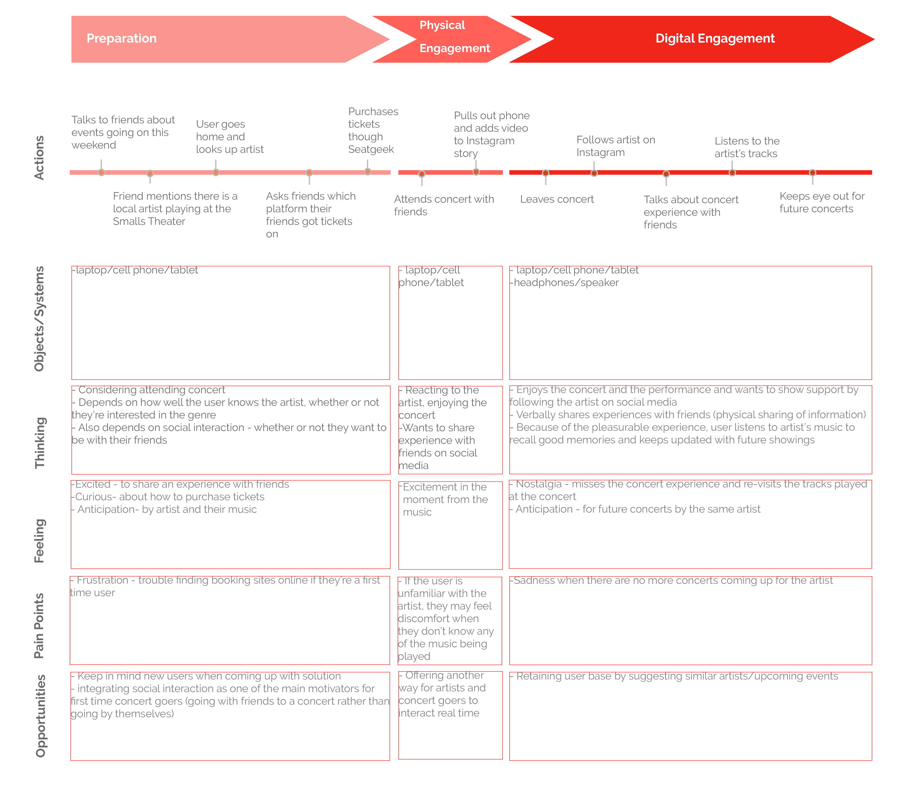

hearsay
Click here for our full report.
Spring 2019
Team
Sofia Sill, Margret Williams, Patrick Tan, Tyler Davis
Role
UI/UX Designer
Methods
user research, user testing, wireframing, prototyping
Skills
Figma, Adobe XD
As music enthusiasts, we sought to create a platform solution that would help support local music artists. Once we reflected on our recent experiences in college, we realized that we weren't very connected with the local music scene and we wanted way to integrate into the local music scene of our new community for the next four year.
We created an application that provides local music artists the opportunity to market events, gather feedback from local concert goers and connect to their audences. An application that allows local concert goers to discover new artists in their area, provide feedback to their favorite artists and create social bonds in person and online.
The objective of this project is to help those that are interested in indie music find and discover some of the artists in their local area. We also hope to help local artists better share their music and increase their online following so that they can one day book their first gig.
Final Design - Onboarding
An onboarding process that orients users. Users select their favorite genres and artists for a reccomended list of local artists. Once they've selected their preferences, their home feed is populated with posts about local concerts, releases and their friend's activity.
Our goal was to bridge the gap between new users and local artists. For many users, they can more easily connect with local artists, if they could relate local artists to ones they already know and listen to.
Final Design - Exploring the App
The application allows users to easily visit artist pages and see their upcoming shows. They can also see the artist's tracks and the amount of engagement the artist has through the number of streams. To see a full library of the artist's songs, users can click the "Visit Soundcloud" button.
We found, through research, that many people discovered local concerts through social media platforms where they see friends posting about an event. We wanted to include that element of social connection in our app by allowing users to add friends, view the concerts they attended as well as their experiences.
Users can post comments and experiences about a certain artist's event directly on the event page.
On the flip side, artists can see fan experiences and comments and use them as feedback for their next performance.
Final Design - Heartrate Monitor
How do we facilitate social connection beyond a comments or feedback page? Our "heartbeat" feature allows concert goers to provide real time feedback to the music. By monitoring the spikes in the person's heart rate, users can upload their in-the-moment reaction to the music.
Users could connect a smartwatch or fitbit to the app, and during concerts, add their heart rate to the concert insight page of the artist's event to show how engaged or excited the audience was during a specific moment of the performance. This allows artists to understand which parts of their performances are especially stimulating to their audience.
Secondary Research
We first decided to do some research to explore how people explore the local music scene. Looking at online sources, we discovered some important findings.
Concertgoer Research
Next, we wanted to understand how people currently looked for local shows and some of the platforms they used. We put out a survey with questions like:" Do you consider yourself a concert goer?" For the purpose of the survey, we defined a “concert goer” as someone who attends at least three or more concerts per year. From there, we ask how they normally find out about concerts and how they find out about new local artists performances. We also inquired about what current ticketing platforms they use in order to book their tickets for concerts and if they would use current platforms for finding out about concerts or buying tickets if they were more easy to use. The last part of our survey targets the interactions between concert goers and artists; we ask how they currently provide feedback, how important it is to engage socially with the local music community, and if they would be interested in an app that allowed them to provide feedback and find out about local performances in an easy way.
Using the information we got from our surveys, I created a user journey flow to understand how people currently find concerts to attend.
Artist Research
For local artists, we decided to conduct in-depth interviews rather than a survey. We asked questions about classifying them as artists (ex. genre, fan size), advertising practices and preferences, openness to feedback, importance of community, positive/negative experiences, and their plans going forward. Since we chose an interview format, we left most of the questions open-ended, which led to very rich findings and quotes. We were aiming for 5 interviews, and we were lucky enough to accomplish this with a variety of students and locals.
Some of the main insights we found when interviewing local artists were:
Mainly use SoundCloud, want to bring as much attention to their new music
Very open to feedback, especially before expanding to more legitimate platforms
Proud to represent their hometown
Problem
The current music industry has an incredibly high barrier of entry due to the small number of well-known artists that are controlling a unproportionally large number of followers online and garnering a majority of the recognition. Without this recognition or following online, it makes it tremendously difficult for these local artists to book their first concert or show because venue owners aren’t willing to take risks on an artist that may or may not have a lot of fans.
Opportunity
Creating an application that helps those that are interested in indie music find and discover some of the artists in their local area. On the other hand, creating an application that helps local artists better share their music and increase their online following so that they can one day go big.
Stakeholders
Local Artists
Artists will benefit by receiving and additional marketing/promotion channel and constructive criticism
Local Concertgoers
Concert goers will be more connected with their communities and be able to engage with artists in a unique, mutually beneficial way
Competitive Analysis
Our research on related products and platforms in this space focused on web and mobile applications that had the mission of connecting artists with fans or booking agencies. With this focus, the platforms we examined for competitive analysis and to inform our own app design wereICONN, SongKick, BandsInTown, and SoundCloud. From these platforms our team realized that few platforms focused on smaller, independent, artists. Most site or apps primarily targeted bigger established names and the fans of those established artists. Additionally, very few of these existing platforms facilitated an environment or interaction where social connection could happen through or as a result of the music. Of these platforms, SoundCloud fulfilled these criteria the best. SoundCloud effectively promotes independent artists by making it easy to upload and share music. The SoundCloud platform also encourages listener feedback and community engagement by allowing the listener to comment on certain sections or timestamps in the song. Because Sound Cloud does both of these effectively, is is the app we chose to primarily engage with when designing our own approach to social connectivity and community engagement through hearsay.
Lo-Fi Prototype
For our initial prototype, we focused on the onboarding and profile configuration experience of a new user.
User Testing
In our first low-fidelity prototype, we had four screens: a sign up screen, a log-in screen, an artist selection screen, and an artist home page. In order to test the concert goers on these initial screens, we conducted a cognitive walkthrough so that we could examine whether the initial screens of our app were intuitive or not. Throughout all of the testing we asked users to think-aloud so that we would be able to hear how they were feeling about our app and if the direction was clear. We began by asking the user to sign up on the first screen and we would manually change it to the next screen once the user had signed up correctly; if a user was not correct or wondered something about the screens, we encouraged them to ask and wrote down concerns/confusions. From there, we asked users to select their favorite artists. On the final screen, we asked concert goer users to walk us through each section of the artist profile; we then followed up with them to see if it was lacking any features that could improve its usage.
The same process was carried out for artists. We displayed our initial screens and described what the interactions would look like for both parties. During this stage, we were given very feedback (described later on) that was very influential in our final prototype.
Final Product
Click here to check out our final version yourself!
Takeaways
A main goal for this project was to find a unexplored way to tackle social interaction. It was challenging to find ways to foster social chatter besides using the standard "feed" or "chatroom." We loved the idea of real time interaction with the "heartbeat" feature. However, we would like to expand further by adding an annotation feature. This would allow users to retrospectively "tag" their own hearbeats by adding notes about their experience at a particular segment of their heartbeat. Overall, this project challenged me to find out-of-the-box ways to encourage social interaction using unconventional features.